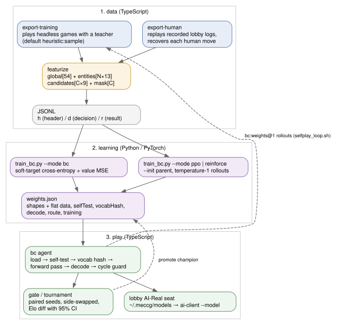
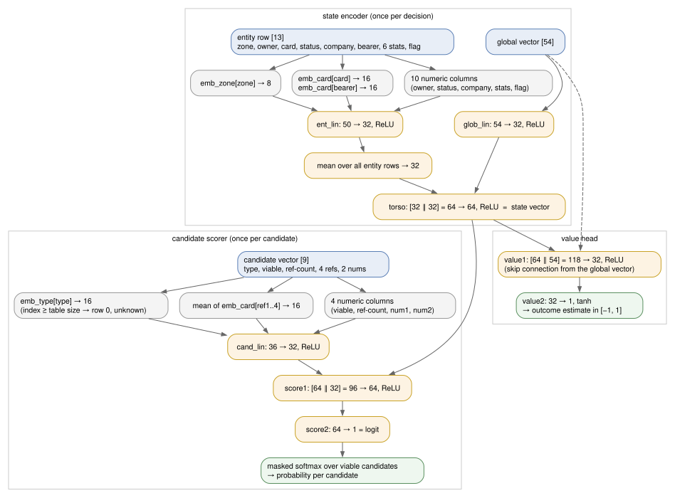

The trained MECCG player: vocabulary, the feature specification, the network, how a decision is read out, the weights file, the training and self-play pipeline, evaluation, shipped models, and results
Real-AI (registry name bc, lobby seat AI-Real) is a small neural network that plays MECCG from the same projected view every other agent sees. It is not a language model. It is an action-conditioned policy/value network of about 48 000 parameters: given the state and the list of candidate actions, it produces one probability per candidate and one estimate of the game's outcome. The network is trained offline in Python (PyTorch) and played in pure TypeScript, with no runtime dependency, by mirroring the forward pass over weights exported as JSON.
Two kinds of training produce a weights file:
export-training output is for opponents, league members, gate baselines and RL rollouts, never for --mode bc; and warm-starting a human clone from an AI-cloned base, as the shipped human-passw-0813 did, is teaching from that AI too. The sections below describe the self-play exporter and the AI-cloned models because they exist and are measured, not because they should be repeated.The design is deliberately pinned to a versioned feature specification and a hashed card vocabulary; a weights file that disagrees with the running code on either is refused rather than played badly. What a model is worth is decided only by paired, side-swapped games with confidence intervals; the results section records what has been measured, including the things that did not work.
GameState, so the hidden-information boundary holds by construction.view.legalActions: { action, viable, reason? }. The network scores every candidate, viable or not, so indices line up with the engine's list; only viable ones can be chosen.FEATURE_SPEC_VERSION (currently 1). Any change to widths, zone ids, action-type order or scaling must bump it; exports and weights files record it and mismatches are refused.ENTITY_ZONES, 1–12).type in the append-only ACTION_TYPES list (0 = unknown).heuristic:sample self-play by default, or human seats in recorded games.export-training or export-human.argmax, class-mass, or sample at a temperature. Declared in the weights file because the right choice depends on the teacher.heuristic is allowed).--init)search:) that samples full states consistent with the view and runs a tree search guided by the network. Measured not to beat the bare policy; not shipped to the lobby.bc:weights.json, bc:weights.json@1, bc:weights.json@class, route:plan-movement+discard-card|bc:w.json|heuristic, search:weights.json@192.
export-training plays headless games with a teacher and records every decision the teacher made, featurized from the exact context the teacher saw. export-human does the same for recorded lobby games, recovering each human move from the game log. Both write the same JSONL format.train_bc.py fits the network by behavioural cloning (or updates an existing one by PPO/REINFORCE on rollouts) and writes a weights file that carries everything needed to verify it: feature spec version, vocab hash, dims, decode declaration, a self-test, and a training summary.createBcAgent loads the file, replays the self-test, checks the vocab hash against the live card pool at the first decision, and then answers each decision with one forward pass and the declared readout. Gates measure it; the lobby serves it.selfplay_loop.sh chains rollouts, updates and gates into iterations, promoting when the gates allow.featurizeState emits 54 columns in the order of GLOBAL_FEATURE_NAMES. Counts are divided by a constant to keep values roughly in [0, 1]; flags are 0/1. The nine phase columns are a one-hot over the Phase enum in declaration order.
| # | column | value |
|---|---|---|
| 0 | turn | turn number / 100 |
| 1–9 | phase:setup, phase:untap, phase:organization, phase:long-event, phase:movement-hazard, phase:site, phase:end-of-turn, phase:free-council, phase:game-over | one-hot of the current phase |
| 10 | is-active-player | 1 if the viewing player is the active player |
| 11 | self-index | seat index, 0 or 1 (unscaled) |
| 12–13 | self-hand-size, opp-hand-size | / 10 |
| 14–15 | self-play-deck-size, opp-play-deck-size | / 100 |
| 16–17 | self-discard-size, opp-discard-size | / 100 |
| 18–19 | self-sideboard-size, opp-sideboard-size | / 100 |
| 20–23 | self-gi-used, self-gi-total, opp-gi-used, opp-gi-total | general influence / 20 |
| 24–25 | self-stage-points, opp-stage-points | / 10 |
| 26–27 | self-deck-exhaustions, opp-deck-exhaustions | count (unscaled) |
| 28–33 | self-mp-character, -item, -faction, -ally, -kill, -misc | raw marshalling points by source / 10 |
| 34–39 | opp-mp-character … opp-mp-misc | same for the opponent |
| 40–41 | self-score, opp-score | tournament score (doubling rule and diversity cap applied) / 10 |
| 42–43 | combat-active, chain-active | 1 if view.combat / view.chain is non-null |
| 44–45 | pending-effects, active-constraints | list lengths / 5 |
| 46–47 | self-companies, opp-companies | / 5 |
| 48–49 | self-characters, opp-characters | characters in play / 10 |
| 50–51 | self-kill-pile, opp-kill-pile | / 10 |
| 52–53 | self-agents, opp-agents | / 5 |
The opponent's hand and deck sizes are public in the view, so they are included; their contents are not, and nothing here leaks them.
One row per visible entity, 13 columns in the order of ENTITY_FEATURE_NAMES. Integer identity columns (zone, card, bearer, status) are embedded or read as codes on the learning side; the rest are scaled numerics.
| # | column | value |
|---|---|---|
| 0 | zone | ENTITY_ZONES id (table below) |
| 1 | owner | 0 self, 1 opponent |
| 2 | card | card-vocabulary index; 0 for a hidden or unknown card |
| 3 | status | 0 untapped, 1 tapped, 2 inverted (wounded) |
| 4 | company | 1-based company index within its side (0 = none); self and opponent numbered independently |
| 5 | bearer-card | vocab index of the character bearing this item/ally/hazard (0 = none) |
| 6 | prowess | definition prowess / 10; for characters in play, effective prowess / 10 |
| 7 | body | definition body / 10; for characters in play, effective body / 10 |
| 8 | mind | definition mind / 10 |
| 9 | influence | definition direct influence / 10; for characters in play, effective DI / 10 |
| 10 | mp | reads a top-level mp field / 5. Card definitions store marshalling points under marshallingPoints, so this column is 0 for every row in practice (see the note below) |
| 11 | corruption | reads a top-level corruption field / 10 (definitions use corruptionPoints, so 0); for characters in play, effective corruption points / 10 |
| 12 | flag | zone-specific: company site → company has moved this turn; on-guard (own) → revealed; opponent agent → face-down |
mp and corruption, which card definitions do not carry (they use marshallingPoints and corruptionPoints). The columns are therefore constant 0 except for the corruption override on character rows. Every shipped model was trained on exactly this layout, so fixing the field names is a feature-spec change: it must bump FEATURE_SPEC_VERSION and retrain, not be patched in place.Rows follow the view's own iteration order, so the same view always yields the same rows. Character rows use live effective stats; items, allies and attached hazards under a character carry that character's vocab index as bearer.
| id | zone | rows emitted |
|---|---|---|
| 1 | selfHand | every card in our hand |
| 2 | selfCharacter | our characters, company by company in company order |
| 3 | oppCharacter | the opponent's characters, likewise |
| 4 | item | each character's items, immediately after the character (both sides) |
| 5 | ally | each character's allies |
| 6 | attachedHazard | hazards attached to each character |
| 7 | companySite | each company's current site (flag = moved) |
| 8 | destinationSite | our companies' destination sites; the opponent's only when revealed |
| 9 | cardInPlay | permanents in play on both sides |
| 10 | onGuard | on-guard cards per company; ours with the revealed flag, the opponent's as the view shows them (hidden ones are card 0) |
| 11 | agent | our agents in full (character rows); the opponent's by revealed definition, flag = face-down |
| 12 | selfSiteDeck | every site left in our site deck (movement-planning signal) |
There is no discard zone; both discard piles enter only as sizes in the global vector. An experimental zone 13 (opponent hazards seen so far this game) exists in export-human --hazard-memory only; it widens the entity list past the committed featurizer and was measured not to help (§21).
featurizeActions encodes every entry of view.legalActions as 9 columns and returns the viability mask alongside. The parameter encoding is generic: the action object is walked with sorted keys (skipping type), to a depth of 4; every string that resolves through the view's instance lookup to a card definition becomes a reference, and every finite number becomes a numeric parameter. Identical actions therefore encode identically regardless of how they were constructed.
| # | column | value |
|---|---|---|
| 0 | action-type | 1-based index in ACTION_TYPES; 0 = unknown type |
| 1 | viable | 1 if the engine allows the action |
| 2 | ref-count | number of card references found / 5 |
| 3–6 | ref-card-1 … ref-card-4 | vocab indices of the first four referenced cards (0 when fewer) |
| 7–8 | num-1, num-2 | the first two numeric parameters / 10 (e.g. a strike's need) |
This encoding is what makes the ~200-type, variable-branching action space tractable: the policy scores each candidate against the state rather than choosing from a fixed-width output, so branching is a runtime set size (1 to over 1 300; mean about 8.9) rather than an architecture constant.
buildCardVocab(cardPool) sorts the card-pool keys and assigns indices from 1; the FNV-1a 32-bit hash of the sorted ids joined by newlines is the vocabulary's identity. The current pool has 1 683 definitions and hash 6518afc0. Two rules keep the hash stable against harmless pool changes:
acts-as-site companions (Wondrous Maps td-171 → td-171-site) get no index of their own; they alias to the source card, so a company standing on one embeds as the card it is, and certifying such a card does not renumber everything.UNKNOWN_CARD, UNKNOWN_SITE), absent references, and any id not in the pool.Adding or removing a real card changes the hash and invalidates every weights file; the agent refuses to play on a mismatch rather than embed cards with the wrong rows.
ACTION_TYPES is the ordered list of every GameAction.type; a candidate's type column is its position + 1. The list currently has 196 entries: the original 158 sorted names, followed by types appended as cards were certified or rules added. Indices are permanent and a new type goes at the end, because the list is a serialisation format shared with every checkpoint: certifying tw-282 once inserted choose-peek-deck alphabetically at index 31, shifting 127 of 158 types, and the champion went from 10–9 against Heuristics 1 to 0–18. A completeness test now diffs the list against every discriminant in packages/shared/src/types/actions-*.ts, after a drift of 25 types had featurized distinct decisions (a dodge offer, a burglary attempt, a riddling guess) as the unknown row.
A model trained before a type was appended has a shorter type-embedding table (158 or 162 rows plus the unknown row in the shipped files). At inference any type index beyond the table maps to row 0, "unknown", rather than being clamped to whatever type sits last; on warm start the trainer grows the table and initialises the new rows as never-seen types.

full preset. Widths are for full; ‖ is concatenation.BcNet in train_bc.py is defined by eight widths, chosen by a preset:
| preset | d_card | d_type | d_zone | d_entity | d_global | d_state | d_cand | d_score | parameters (158 types) |
|---|---|---|---|---|---|---|---|---|---|
large | 24 | 24 | 12 | 64 | 64 | 128 | 64 | 128 | ≈109 k |
full (default, all shipped models) | 16 | 16 | 8 | 32 | 32 | 64 | 32 | 64 | 48 466 |
mini (test fixture) | 4 | 4 | 2 | 8 | 8 | 16 | 8 | 16 | 8 950 |
Layer by layer at full, with the exact tensor shapes the weights file carries (PyTorch Linear: weight [out, in], bias [out]):
| tensor | shape | params | role |
|---|---|---|---|
emb_card.weight | [1684, 16] | 26 944 | card embedding, row 0 = unknown; shared by entity cards, bearers, and candidate references |
emb_type.weight | [159, 16] | 2 544 | action-type embedding (rows = types at training time + 1) |
emb_zone.weight | [16, 8] | 128 | zone embedding; 16 rows leave headroom over the 12 zones |
ent_lin | [32, 50] + [32] | 1 632 | entity encoder over [zone 8 ‖ card 16 ‖ bearer 16 ‖ 10 numerics] |
glob_lin | [32, 54] + [32] | 1 760 | global-vector encoder |
torso | [64, 64] + [64] | 4 160 | state vector from [encoded global 32 ‖ pooled entities 32] |
cand_lin | [32, 36] + [32] | 1 184 | candidate encoder over [type 16 ‖ mean of ref embeddings 16 ‖ 4 numerics] |
score1 | [64, 96] + [64] | 6 208 | scorer hidden layer over [state 64 ‖ candidate 32] |
score2 | [1, 64] + [1] | 65 | logit |
value1 | [32, 118] + [32] | 3 808 | value hidden layer over [state 64 ‖ global 54] (skip connection); older files are [32, 64] |
value2 | [1, 32] + [1] | 33 | value, then tanh |
| total | 48 466 | more than half is the card table; the reasoning part is about 21 500 | |
The entity numerics fed to ent_lin are columns 1, 3, 4, 6–12 of the row (owner, status, company, six stats, flag); the candidate numerics fed to cand_lin are columns 1, 2, 7, 8 (viable, ref-count, num-1, num-2). Every hidden activation is ReLU.
Why the skip connection. The shared torso is optimised almost entirely by the policy loss (about 1.5 versus 0.2 for the value loss), so a value head reading only the torso scored 0.48 mid-game sign accuracy, worse than the raw tournament-score differential it nominally already had as an input. Since 2026-07-26 the value head also reads the global vector directly. Both runtimes detect which variant a file is by the input width of value1, so older files still load.
Capacity is not the lever. Tripling the reasoning capacity (large) on the same 2 000 games gave identical top-1 (0.433 vs 0.431), slightly worse holdout value MSE, and heavier overfitting at every data scale (2026-07-27).
bcForward(model, state, actions) in bc-agent.ts mirrors BcNet.forward exactly, in float64 over the file's float32-rounded values:
ent_lin and ReLU; accumulate. Divide by max(rows, 1). A view with no rows at all (a player who lost every character with an empty hand) pools to zeros; the collate on the Python side handles the same case.glob_lin + ReLU over the global vector; torso + ReLU over the concatenation.cand_lin + ReLU; score1 + ReLU over [state ‖ candidate]; score2 → logit.value1 + ReLU over [state ‖ global] or over the state alone depending on the file, then value2 and tanh.Embedding lookups clamp indices into range except for the type table, where an out-of-range index is sent to the unknown row deliberately (§7). The whole pass is a few hundred microseconds to about a millisecond per decision; a policy-only agent cannot wedge a lobby game, which is one reason search is not shipped.
The probability vector is one thing; the action chosen from it is a separate choice, and the right choice depends on who taught the weights.
| readout | rule | suits | spec |
|---|---|---|---|
argmax | the viable candidate with the highest probability | weights cloned from an agent's soft targets (the teacher scored every candidate, so probability concentrates) | bc:w.json, or file decode.mode: "argmax", or absent |
class-mass | sum probability by action type; take the type with the most mass; within it, the highest candidate. Ties resolve to the type that appears first in the engine's list | weights cloned from human one-hots | bc:w.json@class, or file decode.mode: "class-mass" |
sample at T | draw from p1/T over viable candidates, from the agent's seeded stream | human-cloned weights (T = 1); RL rollouts (T = 1, so the recorded probabilities are the behaviour distribution) | bc:w.json@1, or file decode: { mode: "sample", temperature } |
Why argmax misreads human clones. Argmax assumes every option is one candidate. It is not: plan-movement offers a mean of 20 candidates and up to 286, while pass is always one. A policy that puts 41% on movement spread over twenty plans and 15% on passing has said "move", and argmax reads it as "pass". A human demonstration is a one-hot over the plan they took, so many similar positions with different chosen plans train a deliberately flat distribution across those plans. Measured on human-trained weights: argmax played movement at 1.6% of the decisions where the human moved and scored 3.5% against Heuristics 1, where sampling the same weights scored 40.6–43%, over 320 paired games each.
Precedence. An explicit option on createBcAgent (from the @ suffix) always wins; otherwise the file's declaration decides; a file without one is read at the argmax so that every weights file trained before the field existed keeps the behaviour it was measured with. class-mass and a temperature are alternatives, not a pair; asking for both is an error. The agent names itself bc, bc@class or bc@T so replays say which readout played.
Every decision reports the full probability vector over viable candidates as considered and the value estimate as its note (value 0.312); the explainer renders these as relative preferences, because probabilities are comparable within a decision but not across them.
loadBcWeights rejects a file whose kind is not meccg-bc-weights or formatVersion is not 1, whose featureSpecVersion differs from the build's, whose value1 input width is neither the torso width nor torso + global (an architecture this build does not implement), whose decode mode is unknown or whose sampling temperature is not positive, or where any tensor's data length disagrees with its shape.bcForward; the largest deviation across the probability vector and the value must be at most 2×10−4 (float32 versus float64 rounding), and a non-finite output counts as infinite deviation so NaN cannot pass a > comparison. Failure throws; the agent never plays with drifted arithmetic. This caught an architecture-compatibility bug during development.le-196) may be returned to hand during any organization phase for nothing, and two argmax agents once burned the full 25 000-decision budget inside turn 1. The agent keeps, per game, the set of action keys (the engine's actionId, else type#index) already taken from each state signature and excludes them from the readout; if that excludes everything, the unguarded readout applies. startGame clears the record, because the signature is coarse and one game's history must never narrow another's choices.A single JSON document, about 550 KB at full. The trainer writes it; the agent, the lobby's model picker and eval_value.py read it.
| field | type | meaning |
|---|---|---|
kind | "meccg-bc-weights" | file identity |
formatVersion | 1 | file-format version |
featureSpecVersion | 1 | feature layout the weights expect; must equal the build's |
vocabSize, vocabHash | 1683, "6518afc0" | card vocabulary the embeddings index; checked against the live pool |
actionTypeCount | 158 / 162 / … | types known at training time (rows of emb_type minus one) |
globalWidth | 54 | global vector width |
dims | { preset, values[8] } | the eight widths of §8 |
decode | { mode, temperature? } | how the policy should be read (§10); absent means argmax |
route | { types[], to } | action types delegated, and to whom (§13); absent means the policy answers everything |
training | object | provenance: mode (bc/ppo/reinforce), init, actionWeight, balanceAlpha, earlyStop, data (paths, with @seat suffixes), examples, games, epochs, holdoutTop1Contested, holdoutTop1Overall, holdoutValueMse |
weights | { name: { shape, data } } | every tensor of BcNet.state_dict(), row-major, values rounded to 7 decimals |
selfTest | { global, entities, candidates, mask, expectedProbs, expectedValue } | one real contested example (from the holdout when there is one) and the trainer's outputs, probabilities rounded to 6 decimals |
A cloned policy is not uniformly weak; its competence tracks branching factor, because a one-hot demonstration splits its teaching signal across every candidate it did not name. Measured on 21 808 contested holdout decisions of the human corpus, the deployed weights put 99.7% of their probability on the human's actual draw-cards move and 3.3% on their actual plan-movement, against about 5% for guessing uniformly among the mean 20 plans offered. The action mix was calibrated (it planned movement on 3.3% of decisions, the human's rate), so the policy moved as often as a human and to the wrong places.
createRouteAgent(types, primary, secondary) sends a decision to the secondary agent whenever any viable candidate carries a routed type; the secondary then answers the whole decision, including the option to pass. Routing on what the engine offers, rather than on a guess at the decision's kind, keeps the rule checkable against the legal-action list. Against Heuristics 1 over 240 paired games each (2026-08-14):
| agent | score | paired Elo (95% CI) |
|---|---|---|
plain bc (human-cloned, sampled) | 38.3% | −83 [−129, −39] |
route(plan-movement) | 47.5% | −19 [−60, +21] |
route(plan-movement + discard-card) | 53.1% | +23 [−20, +68] |
Routing the two worst types is worth about 106 Elo (≈64 from movement, ≈42 from discarding) and reaches parity. Head to head against its parent the hybrid measured +9 [−29, +46], not significant, because the two share weights on about 89% of decisions.
The lobby's Real-AI seat can name a bare file and nothing else, so the composition lives in the file: route: { types: ["plan-movement", "discard-card"], to: "heuristic" }. createAgentFromWeights builds bc (with the file's decode) and wraps it when route is present; the delegate is looked up in a local table that contains only heuristic, so a dropped-in file can never put a multi-second search into every lobby game. The wrapped agent is named bc@1+heuristic. The same composition is reachable from the CLIs as route:plan-movement+discard-card|bc:w.json@1|heuristic (the separator is | because , splits agent lists and / appears in every path).
npm run export-training -w @meccg/sim -- [--games N] [--seed S] [--agents a,b] [--decks d1,d2] [--out training.jsonl] [--max-decisions N] [--jobs N]
Plays headless games and wraps each agent so that every decision is featurized from the exact context the agent saw. Defaults: 10 games from seed 1, heuristic:sample on both seats (a sampling agent walks a wider set of trajectories per seed than an argmax one), 25 000-decision cap. Under the training policy this exporter produces RL rollouts (the self-play loop calls it with bc:…@1) and evaluation material; it is not a source of imitation targets, whatever agent it is pointed at. --jobs N (or SIM_JOBS) fans out over child processes on contiguous seed slices and merges shards in seed order; the result is bit-identical to a serial run. Only the approved challenge decks (a, b, c) may be used for training; resolveDecks warns otherwise.
| line | fields |
|---|---|
k: "h" (header, once) | formatVersion 1, featureSpecVersion, vocabSize, vocabHash, actionTypeCount, actionTypes (the names behind the indices, so the trainer can address a type by name), globalWidth 54, entityWidth 13, actionWidth 9, agents, decks, games, baseSeed, maxDecisions, createdAt |
k: "d" (decision) | game, seq (0-based within the game), player (seat index 0/1), phase, global[54], entities[N][13], candidates[C][9], mask[C], chosen (index into the candidate list), weights (list of [index, weight] pairs from the teacher's considered list; empty when the teacher reports none) |
k: "r" (result, per game) | game, seed, outcome (completed / decision-limit / deadlock / engine-error), winnerIndex (null for a draw), winReason, error, finalScores, decisions, turns |
Throughput is about 630 examples per second serially, roughly 2 KB per decision. Self-play is also an engine test: any deadlock or engine-error outcome is an engine bug, and this discipline has found 19 distinct defects, mostly offer/validate asymmetries where the legal-action generator offers an action the reducer rejects.
npm run export-human -w @meccg/sim -- --dir ~/backup/ai-meccg.com --out human.jsonl [--jobs 8]
Every model cloned from self-play inherits its teacher's ceiling; the recorded corpus is the other side of that scoreboard (humans against the AI seats are undefeated). This exporter reads the game server's JSONL logs and writes the identical record format, so human data can be mixed with self-play data or used to fine-tune from it via --init.
AI-Heuristic, AI-MC, AI-Modular, AI-Real, Mentor, plus any name starting AI- (the corpus contains 16 games against an AI-Pseudo no list mentioned; a bot mistaken for a human would feed the model exactly the policy the data is meant to replace). --players restricts to named humans; --exclude-bots skips games against named opponents.records[N+1].action. It is matched structurally (sorted keys, actionId ignored) against the projected view's candidates (direct). If that fails, each same-type candidate is applied through the reducer and the resulting state hash compared with the logged next state (replayed; exact, because the engine's RNG lives in the state). Anything less certain is dropped and counted as unmatched. A move matching a candidate the current engine marks non-viable is refused, since its target index would sit at −109 in the masked softmax (5 of 138 000 decisions).--unfinished neutral) they are exported with outcome: "completed", winnerIndex: null and unfinished: true: the policy learns from every decision and the value head gets z = 0, the honest value of an unknown outcome. --unfinished skip keeps only decided games. The winner is read from the log's terminal game-over state, not from summaries (only 125 logs have one).weights: [], always: a human leaves no distribution over the moves not taken, and the trainer falls back to a one-hot on chosen.python3 packages/sim/train/train_bc.py --data train.jsonl [more.jsonl@seat …] --out weights.json [--epochs 3] [--batch 64] [--lr 1e-3] [--holdout 0.2] [--seed 0] [--dims full] [--value-weight 0.5] [--stride N] [--init parent.json] [--decode auto] [--action-weight pass=0.4] [--balance-alpha α] [--contested-only]
path@0 / path@1 suffix keeps only that seat's decisions (league rollouts: the opponent's recorded probabilities belong to a different policy and must not enter the gradient). Game ids are namespaced per file (fileIndex × 106 + game).--stride N keeps every Nth decision by sequence number and skips the JSON parse for the rest. Decisions within a game share one outcome, so for value learning the binding sample size is games, not decisions; striding buys many more games per gigabyte. Sizing rule from experience: 1 286 games at stride 4 ≈ 25 minutes and 3.4 GB; 3 000 games at stride 2 ≈ over an hour and 41 GB.completed are used; z is +1 / −1 / 0 from winnerIndex relative to the decision's seat.--holdout fraction of games (by id), never a random slice of decisions.chosen when none. Only decisions with two or more viable candidates contribute a policy gradient, but all decisions are trained by default, because forced decisions carry outcome signal and the value head starved without them (holdout value MSE sat near 1.0 when they were excluded; --contested-only restores that for comparison).value_weight (0.5) × MSE(value, z). Optimiser Adam at --lr.--action-weight NAME=W,… scales the policy loss of decisions whose chosen action has that type (weighted mean, so the loss scale and the learning rate carry over). Cloning a corpus reproduces its action mix, including parts that are artefacts of how the teacher won; the shipped human models use pass=0.4.--balance-alpha α flattens the chosen-type distribution by inverse frequency: w = clip((median / count)α, 1/8, 8). Without it an unweighted human clone predicted plan-movement on 0.1% of decisions against the human's 3.3%.Derived from what taught the file unless forced: with --decode auto, if at least half the training decisions carry soft weights the file declares argmax, otherwise sample at --decode-temperature (1.0). A fine-tune with --init inherits its parent's declaration instead, because self-play rollouts always carry the behaviour policy's soft weights and deriving from them would stamp argmax on a human-cloned lineage and gate it at the readout that scores 3.5% instead of 43%.
--init takes dims and the value-skip variant from the parent, refuses a vocab-hash mismatch, and grows a shorter emb_type table to the current type count with the new rows at their default initialisation. Every other shape must match.
Each epoch prints policy loss, value loss, and on the holdout: top-1 on contested decisions, top-1 overall (forced decisions count as correct), and value MSE. The final numbers go into the file's training block. Reference points: the first 400-game heuristic clone reached 72.1% overall and 42.2% contested against a ceiling of 47.0% (the mean of the teacher's maximum normalised weight, since the teacher samples), so it captured about 92% of what imitation can capture; strength kept improving with data long after top-1 saturated (35.8% → 50.0% against the teacher from 40 to 400 games).
Both modes require --init (the policy that generated the rollouts) and rollouts played at temperature 1, so that the recorded candidate weights are the behaviour distribution and the chosen action's behaviour log-probability comes free from the export.
--mode reinforceOne on-policy epoch: loss = −(z − V)·log π(chosen) + value_weight · MSE − entropy · H(π), with the advantage detached. Kept as the sanity reference; more than one epoch without importance correction biases the gradient and the trainer warns.
--mode ppo (the loop default)--value-prefit 1): epochs of training only value1/value2 on the new rollouts, torso and policy frozen. The warm-started head is mis-calibrated on states shaped by unfamiliar opponents, and biased advantages blanket-suppress every action from those games regardless of merit; measured 2026-07-25, heuristic-dominant rollouts lost about 113 Elo on every axis from this alone.A = z − V over the whole set, then normalised to zero mean and unit variance per rollout file (per opponent family), so games against one opponent can never blanket-suppress what was learned against another. Without normalisation, same-sign batches collapsed the policy into a distinctive draw-spike failure.--epochs (4) passes: ratio = π(chosen) / π_old(chosen), loss = −min(ratio·A, clip(ratio, 1−ε, 1+ε)·A) + value_weight · MSE − entropy · H, ε = --clip 0.2, entropy 0.01.(ratio − 1) − log ratio is compared with --kl-target (0.02); exceeding it ends the update and marks earlyStop: true in the file.The loop's learning rate is 3×10−5: 10−4 over 4 epochs produced candidate swings from −141 to +47 Elo with repeated collapses. The advantage is the crudest possible (terminal outcome minus value); generalised advantage estimation is the obvious upgrade not yet taken.
packages/sim/train/selfplay_loop.sh <champion.json> <workdir> [iterations], run from anywhere; it changes into packages/sim.
Each iteration, from the current learning line CURRENT:
GAMES games of bc:CURRENT@TEMP against itself.GAMES_OPP games with the learner in seat 0 (exported as file@0) and GAMES_OPP with the learner in seat 1 (file@1), so only the learner's decisions train.train_bc.py --mode MODE --init CURRENT --holdout 0 over all rollout files → candidate-i.json.GATE_MIN_ELO, then versus every league member at GATE_LEAGUE_MIN_ELO. League gates always run because they also detect drift.ACCUMULATE=1 the learning line still advances to the candidate unless a league gate's point estimate fell below 2 × GATE_LEAGUE_MIN_ELO (blowout → reset to the champion). With ACCUMULATE=0 any rejection resets.| variable | default | meaning |
|---|---|---|
LEAGUE | heuristic | comma-separated frozen opponents, e.g. heuristic,bc:/path/frozen.json |
MODE | ppo | ppo or reinforce |
EPOCHS | 4 (ppo) / 1 (reinforce) | update passes over the rollouts |
GAMES, GAMES_OPP | 60, 30 | self-play games per iteration; games per league member per seat |
LR, CLIP, KL_TARGET, ENTROPY | 3e-5, 0.2, 0.02, 0.01 | trainer settings |
TEMP | 1 | rollout sampling temperature; raising it widens exploration (strategies needing several coordinated low-probability moves, such as travelling to a faction and influencing it, were unreachable, and the measured models never scored a faction point), and PPO stays correct because the ratio is taken against recorded probabilities |
GATE_PAIRS, GATE_ROUNDS | 15, 2 | 60 games per gate |
GATE_MIN_ELO, GATE_LEAGUE_MIN_ELO | 0, −25 | promotion threshold; no-regression tolerance |
SEED0 | 50000 | seed base; each iteration advances by 10 000 |
ACCUMULATE | 1 | continue from rejected candidates |
SIM_JOBS | 1 | parallelism inherited by every export and gate call |
Why the league exists: pure self-play measurably overfits to its own family; an early candidate gained about +26 Elo over its BC parent while losing about −77 to Heuristics 1, and a later one beat its champion by +47 while regressing −47 against the heuristic, which the league gate correctly rejected. Why accumulation exists: per-iteration candidates were stable (about −25 to +33 Elo, no collapses) but a strict 200-game gate can almost never confirm a true +30 edge, and resetting on every rejection threw the gains away. Rollout files are deleted after each iteration; candidates stay on disk.
npm run gate -w @meccg/sim -- --challenger <spec> [--champion heuristic] [--pairs 25] [--rounds 8] [--seed 1] [--min-elo −75] [--decks a,b] [--jobs N]
Plays rounds × pairs seeds, each twice with seats swapped, and passes only when the 95% lower bound of the challenger's score-rate Elo difference is at least --min-elo and every game completes; it exits non-zero otherwise, so CI can block a promotion. --min-elo 0 is the strict "must demonstrably beat the champion" form. Glicko-2 ratings (verified against Glickman's worked example) are reported alongside. The harness records and verifies which git tree it measured, after a period in which failed checkouts produced plausible numbers for the wrong tree (2026-08-16); do not chain pairwise Elo across models, strength here is non-transitive, and measure on at least two deck pairs.
python3 packages/sim/train/eval_value.py --weights w.json --data holdout.jsonl [--stride N] scores a value head in minutes instead of the hour a search gate costs. Per game-stage bucket (by fraction of the game elapsed: early < 0.25, mid-early < 0.5, mid-late < 0.75, late) and overall it reports MSE against the outcome, sign accuracy on decided games (0.5 = coin flip), and mean |value| (a head that hedges near 0 can have a decent MSE while being useless as a discriminator). Late-game sign accuracy above 0.65 is the threshold it calls "usable as a search evaluator".
Files in ~/.meccg/models on the development machine (the lobby lists this directory, newest first). All are full dims, feature spec 1, vocab 6518afc0.
| field | value |
|---|---|
approved-base-0727.json — the base clone | |
| lineage | behavioural cloning from scratch, 3 epochs, full dims, 158 action types, no decode declaration (argmax) |
| data | 2 473 games / 2.20 M decisions of heuristic:sample self-play on the three approved pairings (a/b, a/c, b/c), stride 2 |
| holdout | top-1 43.4% contested, 71.9% overall; value MSE 1.12 |
| measured | 61.3%, +80 [+32, +130] vs Heuristics 1 over 200 games on a/b; +19 [−61, +102] on a/c (2026-07-27). The first model to beat the teacher's point estimate |
rebased-g2it6-0727.json — the RL line of record | |
| lineage | PPO, generation 2 iteration 6 of the loop re-based on approved-base; 4 epochs; no decode declaration (argmax) |
| data | 160 rollout games: 60 self-play plus league games against two members in both seats (learner's decisions only) |
| holdout | none (--holdout 0) |
| measured | its iteration-4 sibling promoted at +63 [+16, +112] vs champion and +51 [+4, +100] vs Heuristics 1 (2026-07-27). A later 60-game gate on the fixed action vocabulary put "trained policy vs heuristic" at 48.8%, −9 [−119, +100] (2026-07-28) |
human-passw-0813.json — the human clone | |
| lineage | behavioural-cloning fine-tune from approved-base, 5 epochs, --action-weight pass=0.4, 162 action types; decode sample @ 1.0 |
| data | 537 recorded human games / 138 305 decisions from export-human, unfinished games neutral |
| holdout | top-1 54.4% contested, 73.0% overall; value MSE 1.17 |
| measured | 38.3%, −83 [−129, −39] vs Heuristics 1 over 240 games |
human-hybrid-0813.json — the recommended lobby model | |
| lineage | the same weights as human-passw, plus route: { types: ["plan-movement", "discard-card"], to: "heuristic" } |
| measured | 53.1%, +23 [−20, +68] vs Heuristics 1 over 240 games: parity |
packages/sim/test-fixtures/bc-mini-weights.json — test fixture | |
| lineage | mini dims, 2 games, 2 epochs, 8 950 parameters; regenerate with --dims mini on a 2-game smoke export when the feature spec or network shape changes |
The two older files know 158 action types and the two human files 162; the current list has 196, so any of the 34–38 newer types is embedded as "unknown" by these models (§7).
bc-400g → runA-it5 (+74) → gen2-it3 (+72); the champion scored 71.1% (+157 [+122, +194]) against the imitation baseline and 55.1% (+36 [+2, +70]) against Heuristics 1 over 400 games each (2026-07-25). The re-based line promoted again at its first generation (+51 [+4, +100] vs Heuristics 1).large dims matched full on top-1 and overfit harder.plan-movement from 3.3% to 3.6% probability on the human's actual move, still chance. Corpus growth of 18% moved the pure policy from −83 to −47 but the hybrid built on it measured −1 against the deployed hybrid's +23: the extra data improved exactly the decisions routing already delegates.GET /api/models lists the .json files in ~/.meccg/models, newest first, by bare file name. A play-real-ai message carries a deck id and one of those names; resolveModelFile rejects anything that is not exactly a listed basename (no separators, no ..), so a lobby message can never smuggle a path.packages/text-client/src/ai-client.ts) with --model <path>; the seat is named AI-Real. The client builds the agent with createAgentFromWeights, so the file's decode and route declarations apply; without --model or --agent it plays Heuristics 1. Only approved decks are offered to the AI.explain uses, so a browser "Ask AI" answer and a log line read alike.bc:<file>, what it would do at the current position or about the player's own last move; the explanation is derived from the projected view only.mc agent has neither problem, which is why it is the recommended dev-server opponent when cards are moving.| file | contents |
|---|---|
packages/sim/src/features/index.ts | FEATURE_SPEC_VERSION and re-exports |
packages/sim/src/features/vocab.ts | card vocabulary, FNV-1a hash, acts-as-site aliasing |
packages/sim/src/features/action-types.ts | the append-only ACTION_TYPES list and actionTypeIndex |
packages/sim/src/features/state.ts | global vector and entity rows |
packages/sim/src/features/action.ts | candidate vectors and mask |
packages/sim/src/agents/bc-agent.ts | weights loading and validation, forward pass, self-test, readouts, cycle guard |
packages/sim/src/agents/from-weights.ts | createAgentFromWeights: decode and route from the file |
packages/sim/src/agents/route-agent.ts | type-routed composition |
packages/sim/src/agents/search-agent.ts, src/search/* | determinizer and PUCT (experimental, not shipped) |
packages/sim/src/cli/export.ts, export-human.ts | the two exporters |
packages/sim/src/cli/gate.ts, tournament.ts, src/glicko2.ts | evaluation |
packages/sim/train/train_bc.py | network, BC, REINFORCE, PPO, weights export |
packages/sim/train/eval_value.py | value-head diagnostic |
packages/sim/train/selfplay_loop.sh | the RL loop |
packages/sim/train/README.md, docs/ai-training-system.md | workflow notes; the 2026-07-26 system paper with background reading |
packages/lobby-server/src/games/models.ts, packages/text-client/src/ai-client.ts | lobby model listing and the headless AI client |
packages/sim/src/features.test.ts, bc-agent.test.ts, test-fixtures/bc-mini-weights.json | coverage and completeness tests for the action-type list; forward-pass and agent tests over the mini fixture |
# 1. the teacher: human trajectories from the lobby corpus npm run export-human -w @meccg/sim -- --dir ~/backup/ai-meccg.com --out human.jsonl --jobs 8 # 2. clone from scratch (CPU is fine) with pass down-weighted python3 packages/sim/train/train_bc.py --data human.jsonl --out human.json --epochs 5 --action-weight pass=0.4 # 3. self-play rollouts are for RL and evaluation only, never imitation targets npm run export-training -w @meccg/sim -- --agents bc:human.json@1,bc:human.json@1 --games 60 --jobs 12 --out rollout.jsonl # 4. play, explain, gate npm run play -w @meccg/sim -- --agents bc:human.json@1,heuristic --seed 7 npm run explain -w @meccg/sim -- --game <id> --seq <n> --player p1 --agent bc:human.json@class npm run gate -w @meccg/sim -- --challenger 'route:plan-movement+discard-card|bc:human.json@1|heuristic' --champion heuristic --pairs 60 --rounds 2 --jobs 12 # 5. value diagnostic and the RL loop python3 packages/sim/train/eval_value.py --weights base.json --data holdout.jsonl --stride 4 LEAGUE="heuristic,bc:frozen.json" SIM_JOBS=12 packages/sim/train/selfplay_loop.sh base.json ~/selfplay/run1 8
| flag | default | meaning |
|---|---|---|
--data | required, 1+ | export files, optional @0/@1 seat filter |
--out | required | weights file to write |
--epochs, --batch, --lr | 3, 64, 1e-3 | optimisation |
--holdout | 0.2 | fraction of games held out (by id, last ones) |
--seed | 0 | torch and python seeds |
--dims | full | preset; ignored with --init |
--value-weight | 0.5 | weight of the value MSE in the loss |
--limit, --stride | 0, 1 | cap parsed decisions; keep every Nth decision |
--mode | bc | bc / reinforce / ppo |
--init | — | warm start; required for RL modes |
--entropy, --clip, --kl-target | 0.01, 0.2, 0.02 | RL stabilisers |
--value-prefit | 1 | PPO value-only epochs before advantages |
--decode, --decode-temperature | auto, 1.0 | readout declaration stamped in the file |
--action-weight | — | NAME=W,… policy-loss multipliers by chosen type |
--balance-alpha | 0 | inverse-frequency exponent over chosen types |
--contested-only | off | train only on decisions with ≥ 2 viable candidates |
| flag | meaning |
|---|---|
--dir / --game | corpus root holding logs/games/, or a single log |
--out | output (default human-training.jsonl) |
--games, --max-decisions | caps |
--players, --bots, --exclude-bots | seat selection |
--unfinished neutral|skip | undecided games as z = 0, or dropped |
--contested-only | omit forced decisions |
--hazard-memory | experimental zone-13 rows; data trains only against itself |
--jobs | shard the file list over child processes |